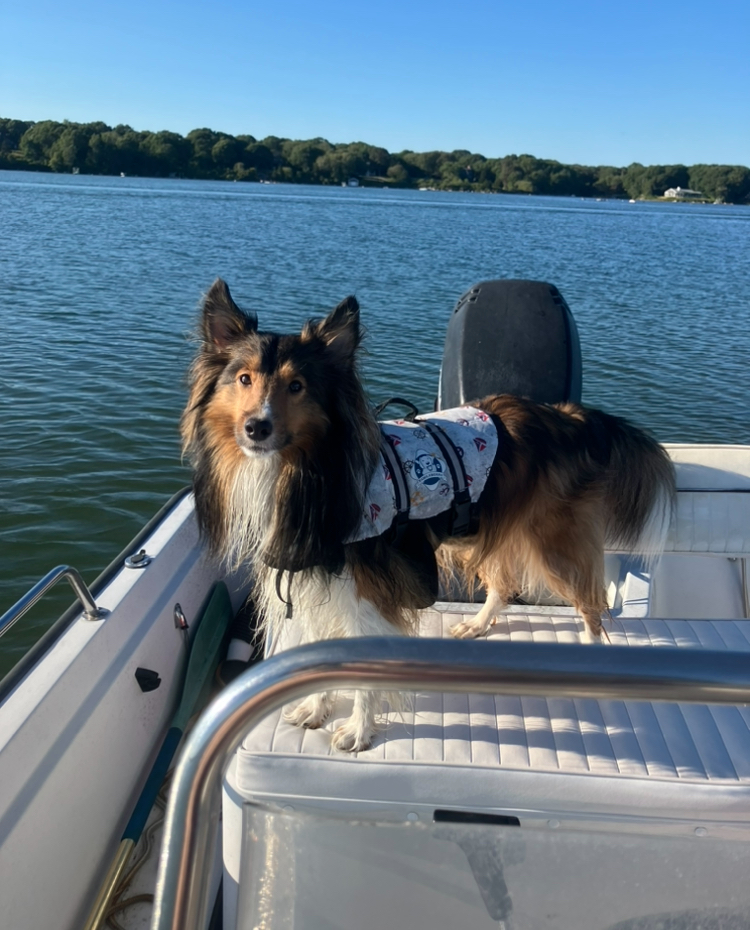
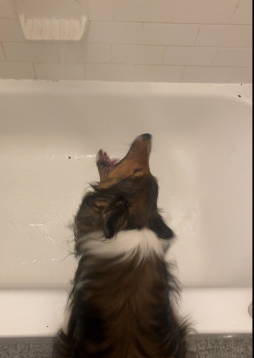
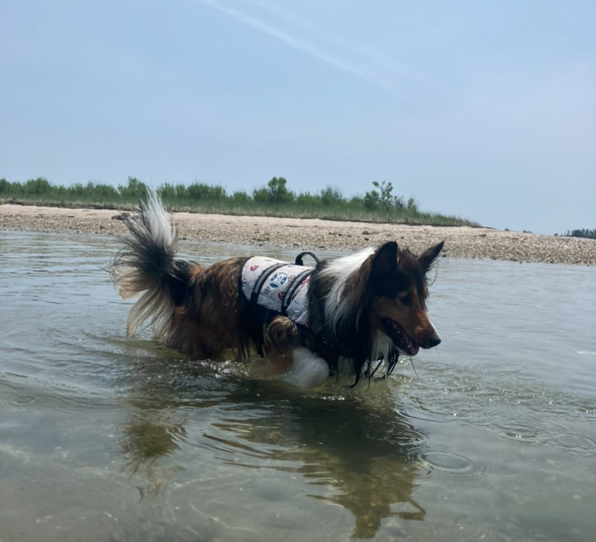
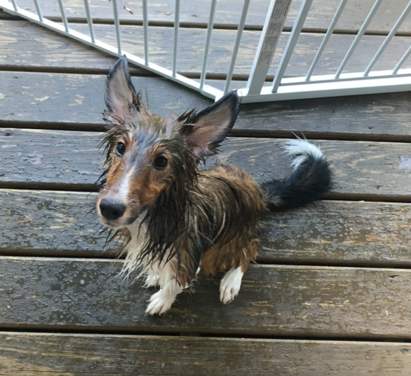

One of Nimi's favorite things is water! She does not like to swim or being wet, but she loves water, both being around it and drinking it! She loves cucumbers and watermelon, too, and will actively beg for them. She drinks water out of the bathtub and from the shower as it is running. She's a silly girl!


She loves water-based activies!


Unfortunately, sometimes she falls in the water, which does not make for a happy puppy, as seen above.
The video shows Nimi, running on the beach. She barks at waves as they crash and chases away some seagulls in the distance. Nimi is wearing a white dog life jacket. The sun is setting.